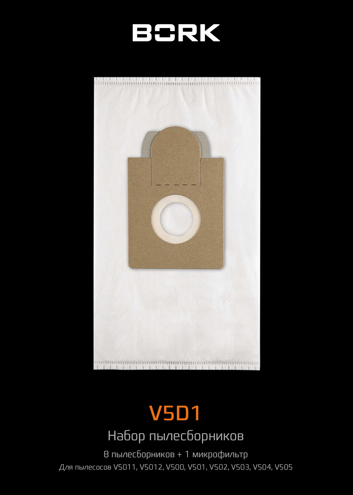

Пылесборники V5D1
Сменный пылесборник BORK V5D1 совместим с пылесосами Bork V5011, V5012, V500, V501, V502. Он легко устанавливается и так же легко снимается. В комплекте 8 пылесборников. Благодаря креплению из плотного картона, которое обеспечивает надёжное прилегание к воздушному патрубку пылесоса, во время уборки пыль будет попадать только в пылесборник. BORK V5D1изготовлен из прочного синтетического материала, выдерживающего большие нагрузки.
Характеристики
Материал пылесборников: нетканый
Количество пылесборников в комплекте:8шт.
Количество фильтров в комплекте:1шт.
Цвет: белый
Срок эксплуатации комплекта: 1 год
Модель товара: V5D1
Гарантия: 1 год
Страна-производитель: Нидерланды
В комплект входят 8 пылесборников со сроком службы 1,5 месяца каждый, подходящих для моделей V5011, V5012, V500, V501, V502.. Каждый аксессуар состоит из сменного пылесборника и микрофильтра.